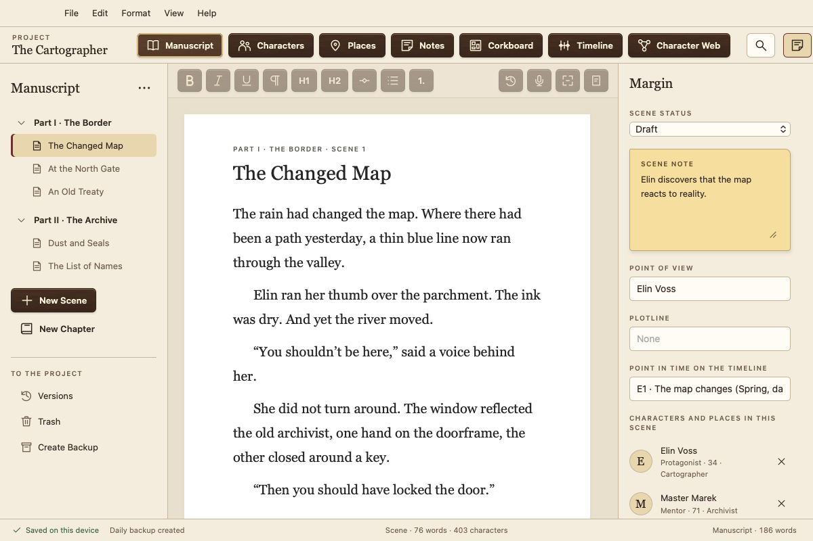
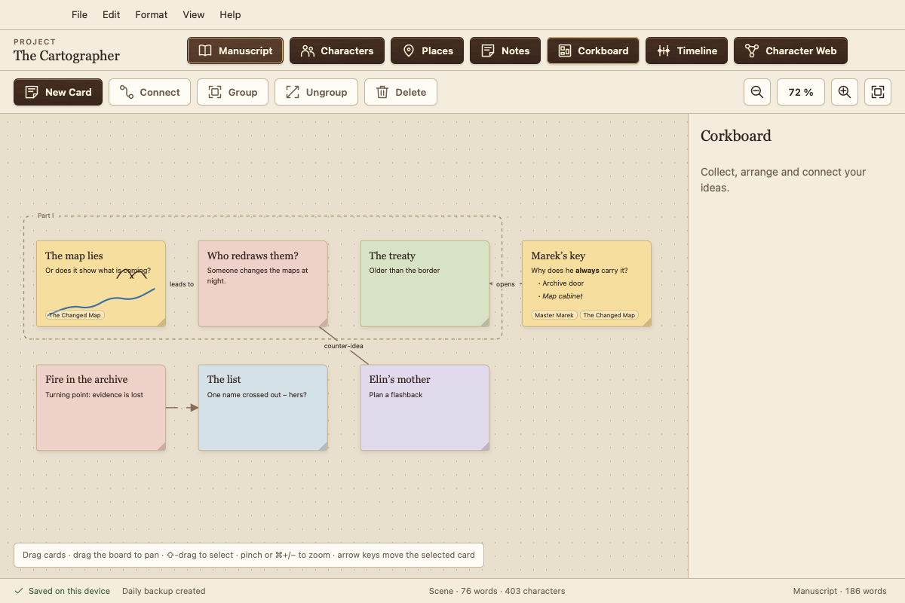
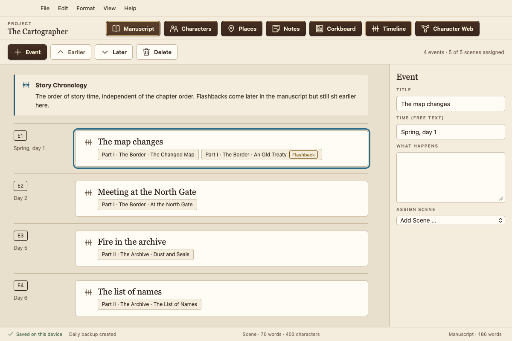
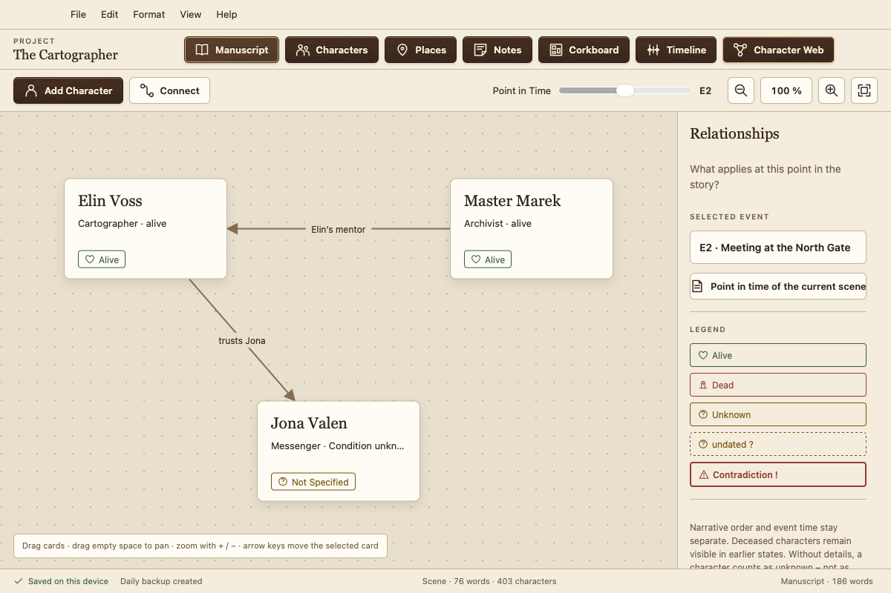
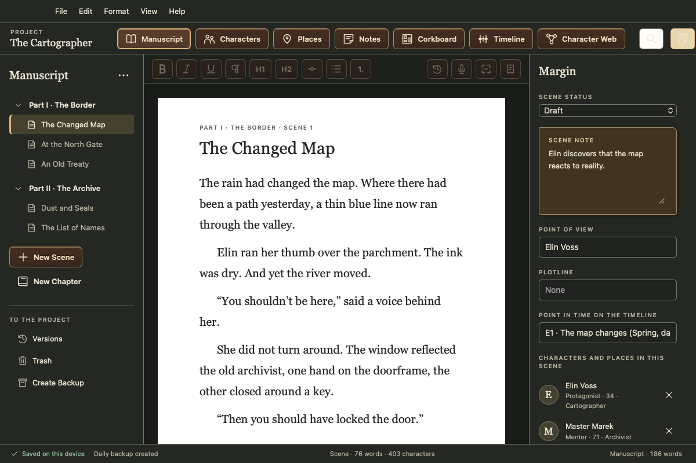

The free writing app for novelists
Your manuscript stays with you: no subscription, no account, no data collection, no AI training. For Mac, Windows, Linux and Android.
Version 0.1.4 · early testing · 6 languages · downloads

Everything for your book in one place
Chapters and scenes
Write in scenes, drag them into a new order, and keep track with status, point of view and scene notes.
Characters and places
Character sheets with your own fields. Atramentum notices who appears in a scene.
Corkboard
Cards with text, lists and sketches, in groups and with connections, linked to scenes and characters.
Timeline
Events in story time. Atramentum spots flashbacks when the order in your book differs from the chronology.
Character web
Relationships and states of your characters at any point in the story. Who is still alive in chapter 12?
Manuscript format, Word and e-book
Export to PDF as a standard manuscript or reading copy, to Word, e-book (EPUB, also for Kindle via KDP), Markdown or plain text. Import from Word, Scrivener, Markdown and plain text.
Revise
Style analysis with readability, long sentences, repetitions and filler words. Spelling and grammar check of the whole manuscript using your system's checker.
See it in action




Your words belong to you
Local and offline
Atramentum stores everything on your device and works without the internet. It never sends your texts or personal data anywhere.
Nothing gets lost
Every change is saved immediately. You also get versions of each scene, a trash folder, daily backups and a rescue tool.
On all your devices
Sync through a folder in your own cloud service (iCloud Drive, Dropbox, OneDrive …), with no account on our side.
Download
| System | Download | Guide |
|---|---|---|
| Mac macOS 13+, Apple silicon and Intel | .dmg | Installing on Mac |
| Windows 10 and 11, 64-bit | Setup (.exe) | Installing on Windows |
| Linux Ubuntu, Debian, Mint | .deb | Installing on Linux |
| Linux all others | AppImage | Installing on Linux |
| Android 7 and later, phone and tablet | .apk | Installing on Android |
Atramentum is not notarized by Apple and not signed with a Microsoft certificate. Certificates cost money every year, and Atramentum is free. That's why macOS and Windows ask once before the first launch; the guides show how to open it anyway. iPhone and iPad are coming via the App Store.
Early testing: please make regular backups and tell me what you notice. Checksums and rescue tools are on the release page.